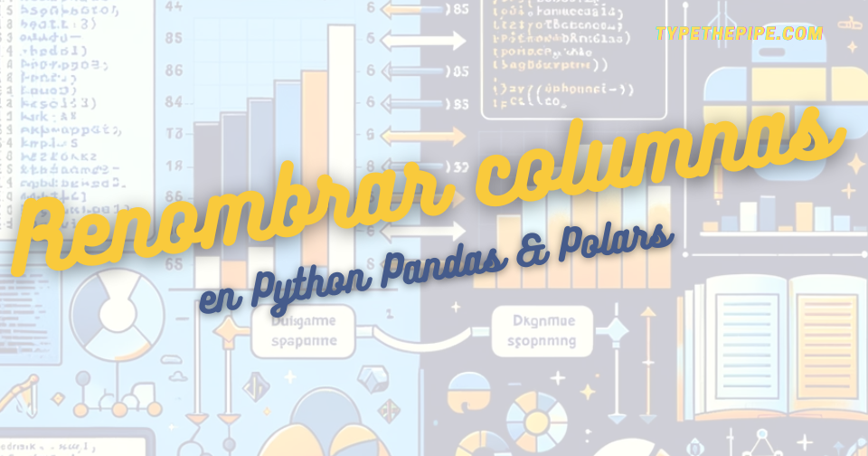

Cómo renombrar columnas en un DataFrame en Python usando Pandas y Polars
Descubre cómo dominar los diccionarios en Python con nuestra guía exhaustiva. Aprende a crear, manejar y optimizar diccionarios para tus proyectos de programación.

Cómo renombrar columnas en un DataFrame en Python: Una Guía práctica
En el mundo del análisis de datos con Python, los DataFrames son una herramienta fundamental. Sin embargo, es común encontrarse con la necesidad de renombrar columnas para mejorar la legibilidad o para cumplir con ciertas convenciones de nombrado. Aquí te explicamos cómo puedes renombrar columnas de un DataFrame en Python utilizando la biblioteca Pandas, esencial para la manipulación de datos.
¿Por qué renombrar columnas? Renombrar columnas en Pandas con rename
Renombrar columnas en un DataFrame puede ser necesario por varios motivos:
- Claridad: Los nombres de las columnas pueden ser confusos o demasiado técnicos.
- Consistencia: En proyectos con múltiples DataFrames, es útil tener nombres de columnas consistentes.
- Necesidades de Análisis: Algunas funciones o métodos pueden requerir nombres de columna específicos.
Como ya sabemos, Pandas (échale un ojo a su última versión) es una biblioteca de Python que proporciona estructuras de datos y herramientas de análisis de datos. Uno de sus objetos más poderosos es el DataFrame, que puedes modificar fácilmente, incluyendo la acción de renombrar columnas.
Si aún no tienes instalado Pandas, puedes hacerlo usando pip, poetry o el gestor de dependencias / entornos que suelas utilizar en tus proyectos
Ahora, veamos un ejemplo de cómo renombrar columnas en un DataFrame en Python:
import pandas as pd
# Crear un DataFrame de ejemplo
df = pd.DataFrame({
'A': [1, 2, 3],
'B': [4, 5, 6],
'C': [7, 8, 9]
})
# Imprimir el DataFrame original
print("DataFrame Original:\n", df)
# Renombrar columnas utilizando un diccionario## DataFrame Original:
## A B C
## 0 1 4 7
## 1 2 5 8
## 2 3 6 9df.rename(columns={'A': 'Primera', 'B': 'Segunda', 'C': 'Tercera'}, inplace=True)
# Imprimir el DataFrame después de renombrar columnas
print("\nDataFrame con Columnas Renombradas:\n", df)##
## DataFrame con Columnas Renombradas:
## Primera Segunda Tercera
## 0 1 4 7
## 1 2 5 8
## 2 3 6 9Para trabajar con DataFrames en Python, es esencial comenzar importando la biblioteca Pandas, lo cual hacemos utilizando el alias ‘pd’. Una vez importada Pandas, creamos un DataFrame simple, compuesto por tres columnas denominadas ‘A’, ‘B’ y ‘C’, las cuales se llenan con datos de ejemplo. El siguiente paso es renombrar estas columnas, para lo cual utilizamos el método .rename() del DataFrame. Este método requiere pasar un diccionario que asocie los nombres actuales de las columnas (las claves) con los nuevos nombres deseados (los valores).
Al especificar el argumento inplace=True, aseguramos que los cambios se apliquen directamente en el DataFrame original. Finalmente, para confirmar que los cambios se han realizado correctamente, imprimimos el DataFrame modificado, mostrando así las columnas con sus nuevos nombres.
Renombrar columnas en Polars
Por supuesto, además de Pandas, existen otras bibliotecas de Python que manejan DataFrames de manera eficiente. Una de ellas es Polars, que se está abriendo paso en el ecosistema de Python. Es conocida por su rapidez y rendimiento al manejar grandes conjuntos de datos. Al igual que en Pandas, renombrar columnas en un DataFrame en Python usando Polars es una tarea sencilla pero fundamental para mantener los datos organizados.
import polars as pl
# Crear un DataFrame de ejemplo en Polars
df_polars = pl.DataFrame({
'A': [1, 2, 3],
'B': [4, 5, 6],
'C': [7, 8, 9]
})
print("DataFrame Original de Polars:\n", df_polars)
# Renombrar columnas en Polars## DataFrame Original de Polars:
## shape: (3, 3)
## ┌─────┬─────┬─────┐
## │ A ┆ B ┆ C │
## │ --- ┆ --- ┆ --- │
## │ i64 ┆ i64 ┆ i64 │
## ╞═════╪═════╪═════╡
## │ 1 ┆ 4 ┆ 7 │
## │ 2 ┆ 5 ┆ 8 │
## │ 3 ┆ 6 ┆ 9 │
## └─────┴─────┴─────┘df_polars = df_polars.rename({"A": "Primera", "B": "Segunda", "C": "Tercera"})
# Imprimir el DataFrame después de renombrar columnas
print("\nDataFrame de Polars con Columnas Renombradas:\n", df_polars)##
## DataFrame de Polars con Columnas Renombradas:
## shape: (3, 3)
## ┌─────────┬─────────┬─────────┐
## │ Primera ┆ Segunda ┆ Tercera │
## │ --- ┆ --- ┆ --- │
## │ i64 ┆ i64 ┆ i64 │
## ╞═════════╪═════════╪═════════╡
## │ 1 ┆ 4 ┆ 7 │
## │ 2 ┆ 5 ┆ 8 │
## │ 3 ┆ 6 ┆ 9 │
## └─────────┴─────────┴─────────┘En este ejemplo, creamos un DataFrame de Polars con datos de muestra y lo imprimimos. Posteriormente, usamos el método .rename() para cambiar los nombres de las columnas. A diferencia de Pandas, no necesitas especificar inplace=True, ya que en Polars la asignación se realiza de manera directa al objeto.
Para seguir leyendo más características de Polars, te dejamos este post sobre cómo aplicar funciones de manera encadenada a un DataFrame de Polars
Buenas prácticas al renombrar columnas
Al renombrar columnas de un DataFrame en Python, es importante seguir ciertas buenas prácticas:
Simplicidad: Escoge nombres de columna simples y descriptivos.
Consistencia: Usa un estilo consistente, como snake_case (ej. ranking_score) o camelCase (rankingScore). Puedes usar linters y formateadores que te ayuden a mantener la consistencia en tus projectos y repositorios de código.
Unicidad: Asegúrate de que cada nombre de columna sea único dentro del DataFrame.
Mantente actualizado en consejos de Python principiante e intermedio
Renombrar columnas en un DataFrame en Python es una tarea común y sencilla, pero esencial para mantener tus datos organizados y fáciles de entender. Tanto con Pandas y Polars, puedes hacerlo en una línea de código, lo cual simplifica enormemente el proceso de limpieza y preparación de datos antes de proceder al análisis.
Esperamos que este tutorial te haya ayudado a entender cómo renombrar columnas en un DataFrame en Python y te motive a seguir explorando las poderosas capacidades de las librerías expuestas. ¡Feliz análisis de datos!
Si deseas mantenerte actualizado…
Carlos Vecina
Senior Data Scientist at Jobandtalent
Senior Data Scientist at Jobandtalent | AI & Data Science para aportar valor en la empresa